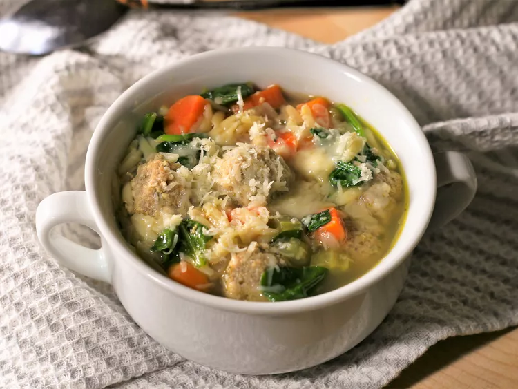

Italian Meat Soup Recipe

Description:
Looking for a hearty and nutritious soup to keep you warm during the winter?
Try this Italian Meatball soup packed with protein, carbs, and essential nutrients. It's a delicious way to stay satisfied and cozy throughout
the cold season.
Ingredients:
- 1 tablespoon olive oil
- 1 ½ cups chopped carrots
- 1 cup sliced celery
- ½ cup diced red onion
- 1 teaspoon dried parsley
- ¼ teaspoon dried basil
Steps:
- Turn on a multi-functional pressure cooker (such as Instant Pot) and select Sauté function. Pour in olive oil and heat until hot. Cook and stir carrots, celery, and onion in hot oil until tender, 4 to 5 minutes. Season with parsley, basil, and pepper. Pour in chicken broth and add meatballs. Close and lock the lid. Close the valve and select the Soup function according to manufacturer's instructions; set the timer for 3 minutes. Allow 10 to 15 minutes for pressure to build.
- Release pressure carefully using the quick-release method according to manufacturer's instructions, about 5 minutes. Unlock and remove the lid. Stir in pasta. Replace the lid. Close the valve and select the Soup function according to manufacturer's instructions; set the timer for 3 minutes. Allow 10 to 15 minutes for pressure to build.
- Release pressure carefully using the quick-release method according to manufacturer's instructions, about 5 minutes. Unlock and remove the lid. Stir in spinach. Let soup sit until spinach is wilted and pasta is fully cooked, about 5 minutes. Season with salt.
- Ladle into bowls and top with Parmesan cheese.
Back to Homepage